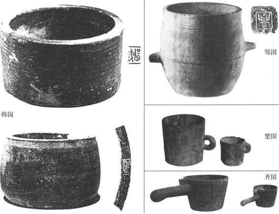
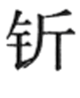
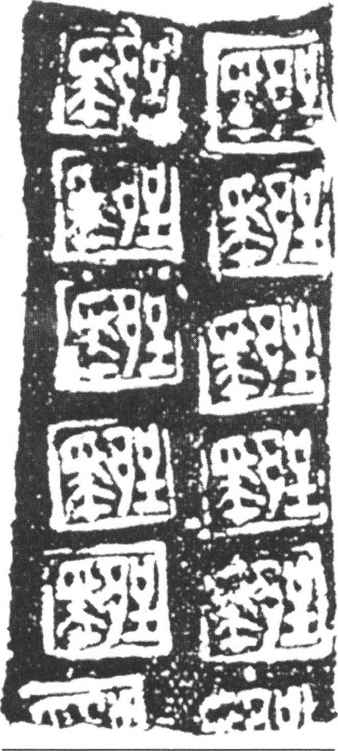
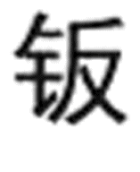
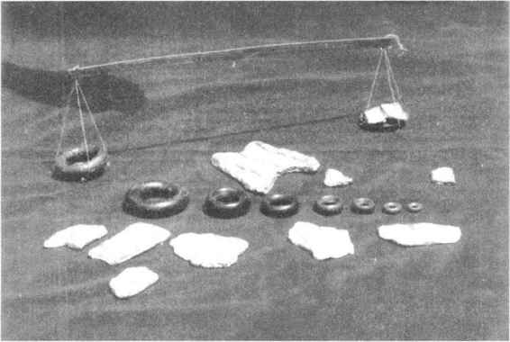
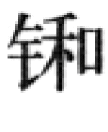
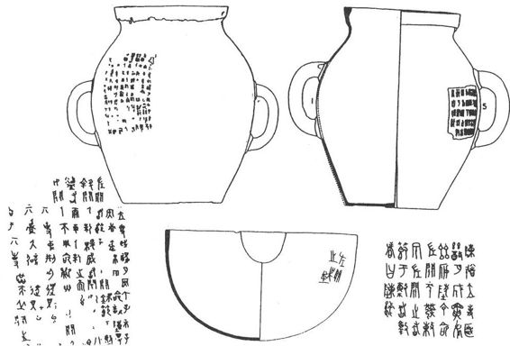

西周末年，周室衰微，礼崩乐坏，列强争霸，战乱此起彼伏，处在大动乱，大变革之中，至周平王东迁，史称东周。东周前期又称春秋，后期称战国。春秋战国土地国有制逐渐被封建领主土地所有制所取代，土地变为私人占有。耕地扩大，铁制农具和畜耕技术被推广，亩产量增加，农产品转化为商品的数量也随之增加。与农业生产关系相适应，手工业和商业生产关系也有了重大变革，“工商食官”的羁绊被冲破，出现了独立的手工业者和更多独立的商人。
早期的交换，多以相互赠送，以物易物的形式进行，如用猎物换取采集物，以黍、粟换取陶冶。这种交换没有、也不需要什么价值标准和用度量衡进行价值比较。在奴隶社会，权力集中在统治者手中，他们控制着一切重要经济部门，商业很不发达，统治者日常的粮食等主要生活必需品，直接从农业赋税中获取而不进入交换市场。手工业生产又只是满足贵族的需要，用于交换的仅是极少的一部分。手工业者都是国有奴隶，他们的一切生产、生活资料都由官府“供给”，不通过商业渠道。
西周的城市里虽已出现商业比较集中的“市”，但是对“市”有严格的管理制度和法规，并设置了管理市场的各级官吏加以控制。从商品的种类、参与交易的人，到哪些商品、什么样的规格才准出售，都加以限制。即使当某些商品长短、大小不合规定，需要裁断时，度量衡器也只能掌握在管理市场的官吏“质人”手中，买卖双方无权进行检测和计量。［31］
春秋战国，随着农业生产力的提高，手工业经营方式也发生了变化。家庭手工业、个体手工业成为官营手工业的补充而允许存在。春秋时期，各诸侯王也都比较重视商业，普遍把通商惠工作为富国强兵的必要条件。以齐国为例，春秋前期，管仲辅佐齐桓公时“一匡天下，九合诸侯”［32］，成为五霸之首，与商业的发达有一定关系。管仲鼓励齐国以外的商人来齐国做买卖，并多次协助齐桓公同各国诸侯会盟，所订盟约中规定，相互间“勿忘宾旅”，“毋遏籴”。即要给商旅提供各种便利，不要阻止粮食流通。并提出要降低关市之税和“修道路，偕（同）度量，一称数”［33］。出于征收关税、平准物价的需要，对统一度量衡也提出了较高的要求。《管子·君臣》篇提出：“衡石一称、斗斛一量、丈尺一绰（准）制，戈兵一度，书同名，车同轨。”［34］管仲主张以法治国，即“有功必赏，有罪必诛”。《管子》一书多处以度量衡来解释法度，如《七法》云：“尺寸也，绳墨也，规矩也，衡石也，斗斛也，角量也，谓之法。”［35］等由于度量衡一经制度化，必具有很强的法制性，此外，也只有当它成为官民日常所用之器具，为民所熟知时，才会以度量衡来比喻法度。就像今天的法律，都用天平为标志来代表公平、正直一样。
随着“工商食官”的格局被打破，各诸侯国都先后出现了一些富至“千金”、“巨万”的工商业主，个体手工业和小农经营者生产的产品也部分或全部都要拿到市上去出售，从而扩大了商品经营范围。商业逐渐与人民生活发生了联系，这时期度量衡已成为生产者和消费者双方都不可缺少的工具了。如手工业产品要求符合一定的标准：“布帛精粗合其数，幅广匹长合其度。”车辆要合辙，各种不同的器物大小也要求合乎规定。商业的扩大，私有观念逐步增强，交换双方对大小、多少、轻重这些量都有所计较，这时就要求有一种为大众所公认、价值稳定、易于分割、坚固耐久、携带方便的特殊商品来作等价物，于是产生了货币。当商品用货币来计价时，就需要通过度量衡来定量了，即“布帛长短同，则贾相若；麻缕丝絮轻重同，则贾相若；五谷多寡同，则贾相若；屦大小同，则贾相若”［36］。如一石粟值二十钱；一斤铜值粟八石；大麦、小米、大豆等皆以重量单位计价。这时期度量衡的社会需要才更广泛，更显著了。（图16—5）

图16-5 战国时期各诸侯国量器
最早的货币是海贝，以“朋”为单位。但贝币不易分割，本身又没有使用价值，最终被金属铸造货币取代。然而金属没有天然单位，只有在制定了重量单位之后，才可能铸造成货币。这就决定了金属货币与度量衡之间的必然联系。铸币最早仿造农具镈或刀的形状，故称铲币、刀币，后来又有了圜钱、铜贝币和金钣。铸币上的重量单位有、镒、寽、两、锱、铢等。春秋战国由于各诸侯国分治，各地货币形制、重量单位也有不同。尽管受当时铸造水平所限，各枚铸币的轻重不甚相等，但它们毕竟都是建立在重量单位之上，使用时一般不需要再去称重，唯楚国的金钣例外。“金”为贵金属，所铸造的金钣又不可能达到轻重完全相等，因此在作支付手段时必须重新称量，故钱币学家称它为“称量货币”，以别于铜铸币。然而这一历史事实经过了近两千年，直到近现代才被大家所认识。
据《太平御览》［37］记载：早在西晋时，曾有一位太守在安徽寿县八公山溪水边散步，偶然发现一块闪闪发光的金属，顺手拾起一看，上面还打有方块印，可惜印上的字连这位满腹经纶的太守也无法识别，只好带回去与亲朋好友共赏。此后的几百年中，偶然在寿县一带又有人拾到类似的金块。至北宋时，沈括在《梦溪笔谈》中也有关于金钣的记载。他听说在寿县地区常有人拾到打有方印的金块，于是便到处托人寻觅。果然在一渔夫手中得到了一块上面打有多方印的金钣。因寿县有八公山，传为西汉淮南王刘安修炼之所，故释印上两字为“劉主”，定为刘安药金。［38］可见沈括的释读也完全属于附会。直到清末由于研究甲骨文、金文的人逐渐多了起来，释别古文字水平提高，才有人推翻“劉主”说，释读为“郢爰”。“郢”是楚国国都的泛称，“爰”认为是楚国的重量单位。这一说法也延续了相当长一段时间，直到现代，又有人认为“爰”字的释读不妥，“爰”不是重量单位，而应释作“爯”（稱），［39］（图16—6）即楚国的称量货币。大块金钣在交易时，可以切割成不同大小，再用天平称重后才作支付。20世纪40年代以来，在楚国故地不断出土了许多环形铜权，最可贵的是1954年在长沙左家公山楚国墓葬中出土了一套完整的天平，包括木质衡杆，两个铜盘和九件环形铜权。（图16—7）最小的0.65克，最大的125克，九件相加约251克（一斤）。每件铜环权都是以倍数递增，即一铢；二铢；三铢；六铢；半两（十二铢）；一两；二两；四两；八两（半斤）［40］。显然，这类小型天平是用来称量黄金货币不可缺少的衡器。由于商业的繁荣，金钣的大量使用，这类小型天平也随着增多，仅在湖南就有一百多座楚墓中出土了这类权衡器。以环形砝码最常见，多则十枚，少则一二枚。可以设想，当时富商大贾们对贵重商品已是锱铢必较了。度量衡器不但是商人们必备的用器，贵族们甚至也将它们视为生活用品，死后随葬于地下，成为我们考证度量衡史重要的实物佐证。

图16-6 楚国金“郢爯”铭文

图16-7 楚国称金币的“天平”
春秋战国，许多诸侯王为了生存，并争夺霸主地位，都任用贤能在政治、经济上相继进行了改革，废除旧的土地分封制，把田地分赏给国人去耕种，提高了生产的积极性，再根据土地面积规定生产量标准来征收赋税。在这场变革中，新兴地主阶级与旧的奴隶主贵族之间矛盾十分尖锐。而在长期的斗争中，度量衡也起到了一定的作用。以齐国为例，早在管仲辅助齐桓公时，已十分重视对度量衡的改革和统一。他的一系列措施对发展经济、富国强民起到了明显的效果。但随着岁月的流逝，二百多年后，齐国已由盛到衰，至齐景公时，由于过分地追求享乐，对百姓的压榨十分残酷，每遇灾荒之年，哀鸿遍野，民不聊生。一次，晏婴出使晋国，与晋国大夫叔向私下谈论两国的政治局势。晏婴无可奈何地对叔向说：齐国迟早会被田氏取代（田氏是新兴地主阶级的代表）。齐国量制是豆、区、釜、钟。四升为豆、四豆为区、四区为釜、十釜为钟。而田氏却自设“家量”，以五升为豆，五豆为区，五区为釜。每遇灾荒之年就用大斗“家量”把粮食借给灾民，年成好转再用小斗“公量”收回，以此来笼络民心。百姓都扶老携幼地归顺田氏。现在的姜姓齐国迟早会被田氏取代。［41］晏婴的预言最终变成了现实。1857年在齐国故地出土了三件量器：子禾子铜釜、陈纯铜釜和左关铜。［42］（图16—8）器物上都刻有铭文，经过许多专家共同研究，认为应该是田氏取代姜氏被立为诸侯王时铸造的。子禾子釜上刻有一百多字的铭文，大意是说：左关釜是国家级的标准器，不准加大或减少其量。如有不从命，则论其轻重施以相应的刑法。陈纯釜上还把各级管理、监督制造和具体制造者的官职、人名都刻在器物上，以示各负其责。“左关”是当时的通商关卡。［43］由于商业规模逐渐扩大，商人出入各诸侯国之间都要征收赋税。如果说，在此之前，度量衡仅仅是统治阶级手中的剥削工具，他们所掌握的度量衡器便是唯一的标准，到了春秋战国，已将度量衡的检定、管理制度都刻在器物上，成了大家都看得见、人人都必须遵守的成文法了。

图16-8 齐国三件铜量器及铭文摹本
春秋战国度量衡的不统一，除一国之内有“公量”、“家量”之外，从文献记载还可以看到各国之间单位名称、进位制度、单位量值都有较大的差别，从出土器物上也可见一斑。如上述齐国量器豆、区、釜、钟都没有脱离实用器的器形，而后期的升、斗、釜却已成为便于使用和测量的度量衡专用器了。各国器形也略有不同：齐国的升、斗为圆口单柄、铜质；韩国、邹国的陶量与秦陶量器形相近，直口无柄；楚国铜量类似近现代的量杯。权衡器除楚国用环权外，其他各国多为馒头形、顶端带鼻纽，以便系绳。从刻有量值铭文的器物来比较，许多国家所用的度量衡单位、单位量值也有区别。但从另一方面又可以证明，战国后期各诸侯国度量衡已趋向统一，如齐国一釜、秦国的一斛单位名称不同，容积却都在二万毫升左右。楚国环权的一铢又与赵国金饰件刻有朱（铢）、两的单位量值十分接近，即每斤约二百五十克。经过了数百年的战争和混乱，统一成为众望所归。度量衡趋向于统一，正是从一个侧面反映了统一的愿望。